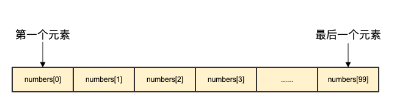
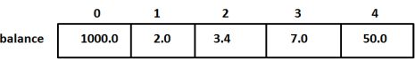

Arrays en el lenguaje Go
El lenguaje Go proporciona una estructura de datos de tipo array.
Un array es una secuencia de elementos de datos numerados de longitud fija con un mismo tipo único; este tipo puede ser cualquier tipo primitivo, como enteros, cadenas o tipos definidos por el usuario.
En comparación con declararnumber0, number1, ..., number99las variables, usar la forma de arraynumbers[0], numbers[1] ..., numbers[99]es más conveniente y fácil de expandir.
Los elementos de un array se pueden leer (o modificar) mediante un índice (posición). El índice comienza en 0: el primer elemento tiene índice 0, el segundo índice 1, y así sucesivamente.

Declarar arrays
La declaración de un array en Go requiere especificar el tipo de elemento y la cantidad de elementos. El formato de sintaxis es el siguiente:
var arrayName [size]dataTypeDonde,arrayNamees el nombre del array,sizees el tamaño del array,dataTypees el tipo de dato de los elementos del array.
A continuación se define un array `balance` de longitud 10 y tipo `float32`:
var balance [10]float32
Inicializar arrays
Lo siguiente demuestra la inicialización de arrays:
El siguiente ejemplo declara un array de enteros llamado `numbers` de tamaño 5. Al declararlo, cada elemento del array se inicializa por defecto según su tipo de dato; para el tipo entero, el valor inicial es 0.
var numbers [5]int
También se puede usar una lista de inicialización para inicializar los elementos del array:
var numbers = [5]int{1, 2, 3, 4, 5}
El código anterior declara un array de enteros de tamaño 5 e inicializa sus elementos como 1, 2, 3, 4 y 5, respectivamente.
Además, también se puede usar:=la sintaxis de declaración corta para declarar e inicializar arrays:
numbers := [5]int{1, 2, 3, 4, 5}
El código anterior crea un array de enteros llamado `numbers`, establece su tamaño en 5 e inicializa los valores de los elementos.
Nota:En Go, el tamaño del array es parte del tipo, por lo que los arrays de diferentes tamaños son incompatibles. Es decir,[5]int 和 [10]intson tipos diferentes.
A continuación se define el array `balance` de longitud 5 y tipo `float32`, y se inicializan sus elementos:
var balance = [5]float32{1000.0, 2.0, 3.4, 7.0, 50.0}
También podemos inicializar rápidamente un array mediante un literal al declararlo:
balance := [5]float32{1000.0, 2.0, 3.4, 7.0, 50.0}
Si la longitud del array no está determinada, se puede usar...en lugar de la longitud del array; el compilador deducirá la longitud del array según el número de elementos:
var balance = [...]float32{1000.0, 2.0, 3.4, 7.0, 50.0}
或
balance := [...]float32{1000.0, 2.0, 3.4, 7.0, 50.0}
Si se ha establecido la longitud del array, también podemos inicializar elementos especificando su índice:
// 将索引为 1 和 3 的元素初始化
balance := [5]float32{1:2.0,3:7.0}
En la inicialización del array,{}el número de elementos entre llaves no puede ser mayor que[]el número entre corchetes.
Si se omite[]el número entre corchetes y no se establece el tamaño del array, Go establecerá el tamaño del array según el número de elementos:
balance[4] = 50.0
El ejemplo anterior leyó el quinto elemento. Los elementos del array se pueden leer (o modificar) mediante un índice (posición); el índice comienza en 0: el primer elemento tiene índice 0, el segundo índice 1, y así sucesivamente.

Acceder a los elementos del array
Los elementos del array se pueden leer mediante un índice (posición). El formato es: nombre del array seguido de corchetes, y dentro de los corchetes el valor del índice. Por ejemplo:
var salary float32 = balance[9]
El ejemplo anterior leyó el valor del décimo elemento del array `balance`.
A continuación se muestra un ejemplo de operaciones completas con arrays (declaración, asignación, acceso):
Ejemplo 1
import "fmt"
func main() {
var n [10]int /* n es un array de longitud 10 */
var i,j int
/* Inicializa los elementos del array n */
for i = 0; i < 10; i++ {
n[i] = i + 100 /* Establece el elemento como i + 100 */
}
/* Muestra el valor de cada elemento del array */
for j = 0; j < 10; j++ {
fmt.Printf("Element[%d] = %d\n", j, n[j] )
}
}
El resultado de ejecutar el ejemplo anterior es el siguiente:
Element[0] = 100 Element[1] = 101 Element[2] = 102 Element[3] = 103 Element[4] = 104 Element[5] = 105 Element[6] = 106 Element[7] = 107 Element[8] = 108 Element[9] = 109
Ejemplo 2
import "fmt"
func main() {
var i,j,k int
// Declara e inicializa rápidamente el array
balance := [5]float32{1000.0, 2.0, 3.4, 7.0, 50.0}
/* Muestra los elementos del array */ ...
for i = 0; i < 5; i++ {
fmt.Printf("balance[%d] = %f\n", i, balance[i] )
}
balance2 := [...]float32{1000.0, 2.0, 3.4, 7.0, 50.0}
/* Muestra el valor de cada elemento del array */
for j = 0; j < 5; j++ {
fmt.Printf("balance2[%d] = %f\n", j, balance2[j] )
}
// Inicializa los elementos con índice 1 y 3
balance3 := [5]float32{1:2.0,3:7.0}
for k = 0; k < 5; k++ {
fmt.Printf("balance3[%d] = %f\n", k, balance3[k] )
}
}
El resultado de ejecutar el ejemplo anterior es el siguiente:
balance[0] = 1000.000000 balance[1] = 2.000000 balance[2] = 3.400000 balance[3] = 7.000000 balance[4] = 50.000000 balance2[0] = 1000.000000 balance2[1] = 2.000000 balance2[2] = 3.400000 balance2[3] = 7.000000 balance2[4] = 50.000000 balance3[0] = 0.000000 balance3[1] = 2.000000 balance3[2] = 0.000000 balance3[3] = 7.000000 balance3[4] = 0.000000
Más contenido
Los arrays son muy importantes para Go; a continuación presentaremos más contenido sobre los arrays:
| Contenido | Descripción |
|---|---|
| Arrays multidimensionales | Go admite arrays multidimensionales; el más simple es el array bidimensional |
| Pasar arrays a funciones | Puedes pasar parámetros de tipo array a funciones |
Diya
xio***ayong@foxmail.com
Usar arrays para imprimir el triángulo de Yang Hui
Según el contenido de la fila anterior, se obtiene el contenido de la siguiente fila y se imprime.
package main import "fmt" func GetYangHuiTriangleNextLine(inArr []int) []int { var out []int var i int arrLen := len(inArr) out = append(out, 1) if 0 == arrLen { return out } for i = 0; i < arrLen-1; i++ { out = append(out, inArr[i]+inArr[i+1]) } out = append(out, 1) return out } func main() { nums := []int{} var i int for i = 0; i < 10; i++ { nums = GetYangHuiTriangleNextLine(nums) fmt.Println(nums) } }El resultado de salida es:
Diya
xio***ayong@foxmail.com
Principiante Xiao Zai Zai
olc***se@sina.cn
Yo también haré un triángulo de Yang Hui:
package main import "fmt" func triangle(n int) { var item []int for i:=1;i<=n;i++ { item_len:=len(item) if item_len==0 { item = append(item,1) } else { temp_s := []int{1} for j:=0;j<item_len-1;j++ { temp_s=append(temp_s,item[j]+item[j+1]) } temp_s=append(temp_s,1) item = temp_s } fmt.Println(item) } } func main(){ triangle(13) }Principiante Xiao Zai Zai
olc***se@sina.cn
kam
156***8447@qq.com
Entonces yo también voy a imprimir un triángulo de Yang Hui:
package main import "fmt" func main() { yanghuisanjiao(12) } func yanghuisanjiao(rows int) { for i := 0; i < rows; i++ { number := 1; for k := 0; k < rows-i; k++ { fmt.Print(" ") } for j := 0; j <= i; j++ { fmt.Printf("%5d", number) number = number * (i - j) / (j + 1); } fmt.Println() } }Resultado impreso:
1 1 1 1 2 1 1 3 3 1 1 4 6 4 1 1 5 10 10 5 1 1 6 15 20 15 6 1 1 7 21 35 35 21 7 1 1 8 28 56 70 56 28 8 1 1 9 36 84 126 126 84 36 9 1 1 10 45 120 210 252 210 120 45 10 1 1 11 55 165 330 462 462 330 165 55 11 1kam
156***8447@qq.com
Aún no estoy lleno
160***3328@qq.com
Enlace de referencia
Inicialización de arrays
La inicialización de arrays tiene varias formas.
[5] int {1,2,3,4,5}Un array de longitud 5, cuyos elementos son: 1, 2, 3, 4, 5.
[5] int {1,2}Un array de longitud 5, cuyos elementos son: 1, 2, 0, 0, 0.
Al inicializar, los elementos sin valor inicial especificado se asignarán al valor por defecto de su tipo: 0 para `int`, y `""` para `string`.
[...] int {1,2,3,4,5}Un array de longitud 5; su longitud se determina según el número de elementos especificados en la inicialización.
[5] int { 2:1,3:2,4:3}Un array de longitud 5, `key:value`, cuyos elementos son: 0, 0, 1, 2, 3. En la inicialización se especificaron los valores correspondientes a los índices 2, 3, 4: 1, 2, 3.
[...] int {2:1,4:3}Un array de longitud 5, cuyos elementos son: 0, 0, 1, 0, 3. Debido a que se especificó el valor 3 correspondiente al índice máximo 4, su longitud se determina como 5 según el número de elementos inicializados, para su asignación y uso.
Inicialización de slices
Un slice se puede inicializar a partir de un array, o mediante la función incorporada `make()`.
Al inicializar, `len=cap`. Al añadir elementos, si la capacidad `cap` es insuficiente, se amplía al doble de `len`.
s :=[] int {1,2,3 }Inicialización directa de un slice: `[]` indica que es un tipo slice, `{1,2,3}` son los valores iniciales, que son 1, 2, 3. Su `cap=len=3`.
s := arr[:]Inicializar el slice `s`, que es una referencia al array `arr`.
s := arr[startIndex:endIndex]Crea un nuevo slice con los elementos de `arr` desde el índice `startIndex` hasta `endIndex-1`.
s := arr[startIndex:]Si se omite `endIndex`, significa hasta el último elemento de `arr`.
s := arr[:endIndex]Si se omite `startIndex`, significa comenzar desde el primer elemento de `arr`.
s1 := s[startIndex:endIndex]Inicializar el slice `s1` mediante el slice `s`.
s :=make([]int,len,cap)Inicializar el slice `s` mediante la función incorporada `make()`; `[]int` indica que es un slice cuyo tipo de elemento es `int`.
Aún no estoy lleno
160***3328@qq.com
Enlace de referencia
Wen Huohuo
403***793@qq.com
Para recorrer un array bidimensional se puede usar `range`:
package main import ( "fmt" ) func main() { // 二维数组 var value = [3][2]int{{1, 2}, {3, 4}, {5, 6}} // 遍历二维数组的其他方法，使用 range // 其实，这里的 i, j 表示行游标和列游标 // v2 就是具体的每一个元素 // v 就是每一行的所有元素 for i, v := range value { for j, v2 := range v { fmt.Printf("value[%v][%v]=%v \t ", i, j, v2) } fmt.Print(v) fmt.Println() } }El resultado de salida es:
Wen Huohuo
403***793@qq.com